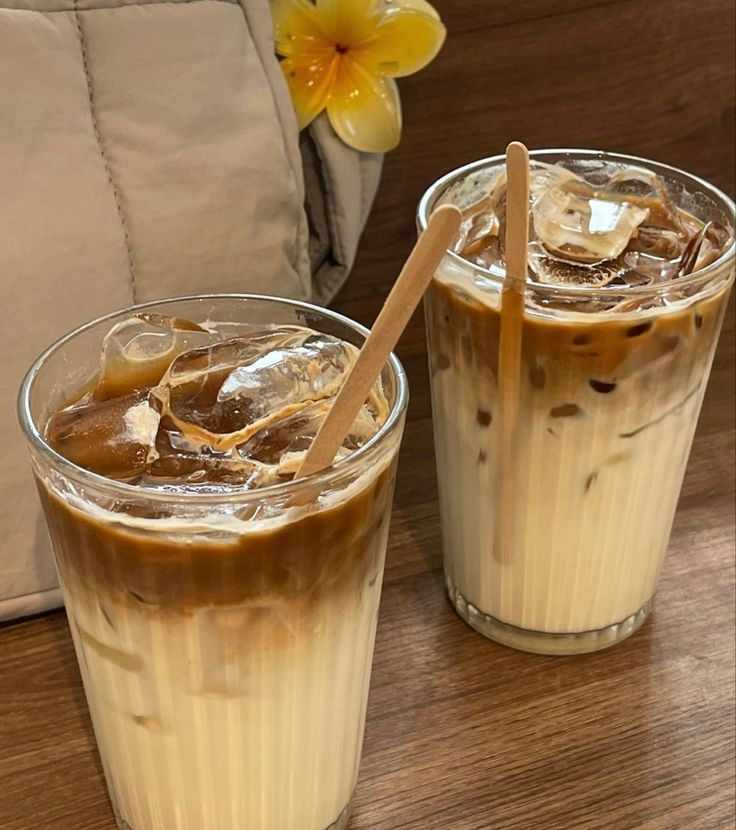
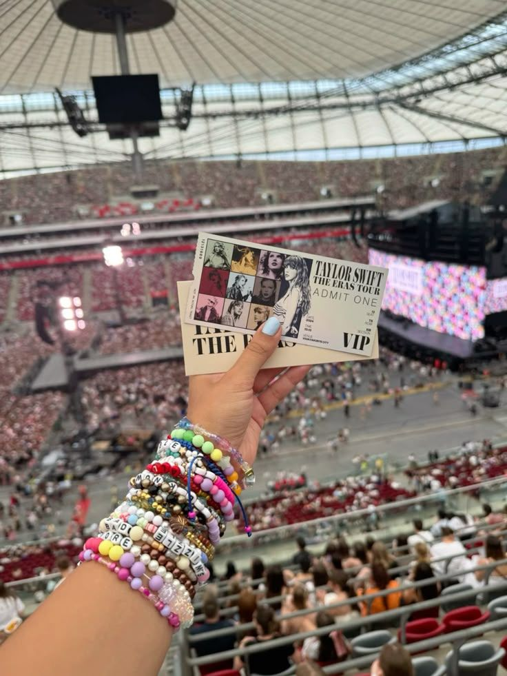
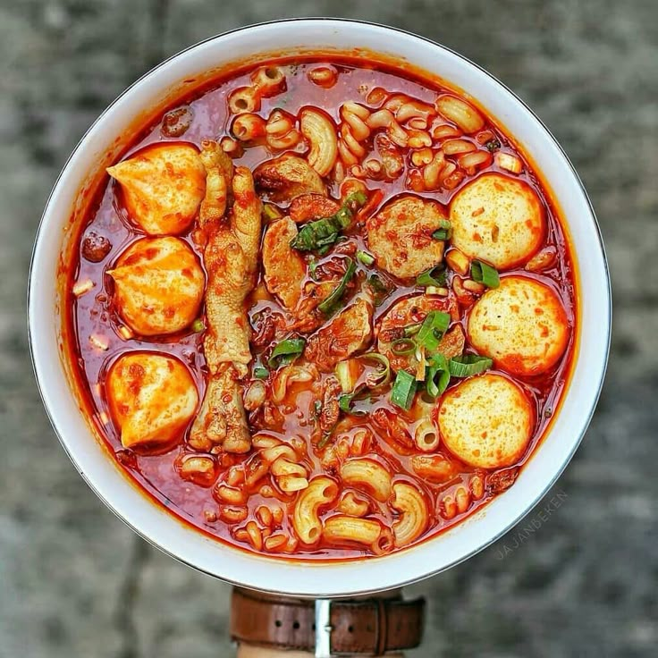

Here are some of my favorite things and why I like them.

Coffee is one of my favorite drinks. I usually drink coffee when I am studying or working on assignments. It helps me feel more focused and makes studying more enjoyable.

Music is a big part of my daily life. I enjoy pop, jazz, and pop-rock music. I also love singing, so music is something that I enjoy both listening to and performing.

One of my favorite foods is seblak. I like it because it is spicy, flavorful, and has many different toppings. It is also perfect when I want something warm and comforting.